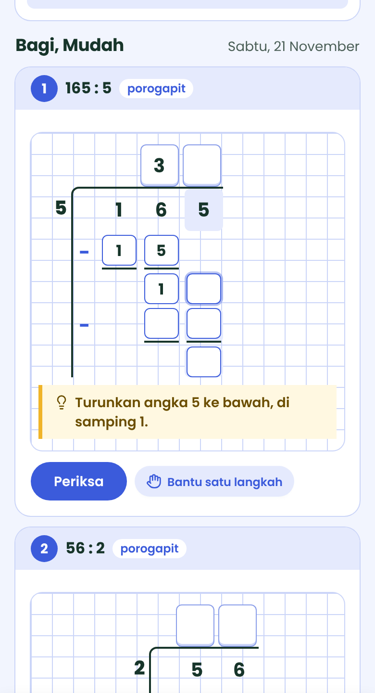

{{HOOK}}
4
7
2
1
8
4
−
3
2
3
2
−
0
17 : 4 = 1, tulis di atas
21 × 4 = 4
37 − 4 = 3
4Turunkan 2, jadi 32
532 : 4 = 8
68 × 4 = 32, sisa 0
72 : 4 = 18
Setiap kotak ada
petunjuknya
petunjuknya

Porogapit
langkah demi langkah
langkah demi langkah
Coba Bab 1 gratis
besmartkids.id
Paket SD, SMP, atau SMA Rp79.000
akses 1 tahun
akses 1 tahun